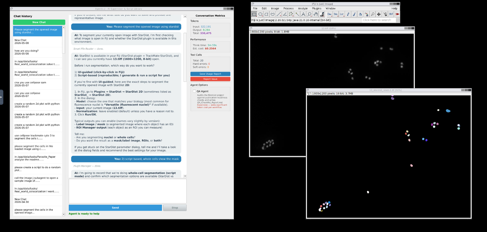
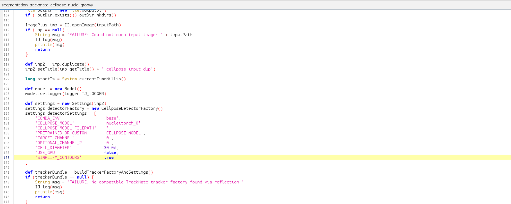
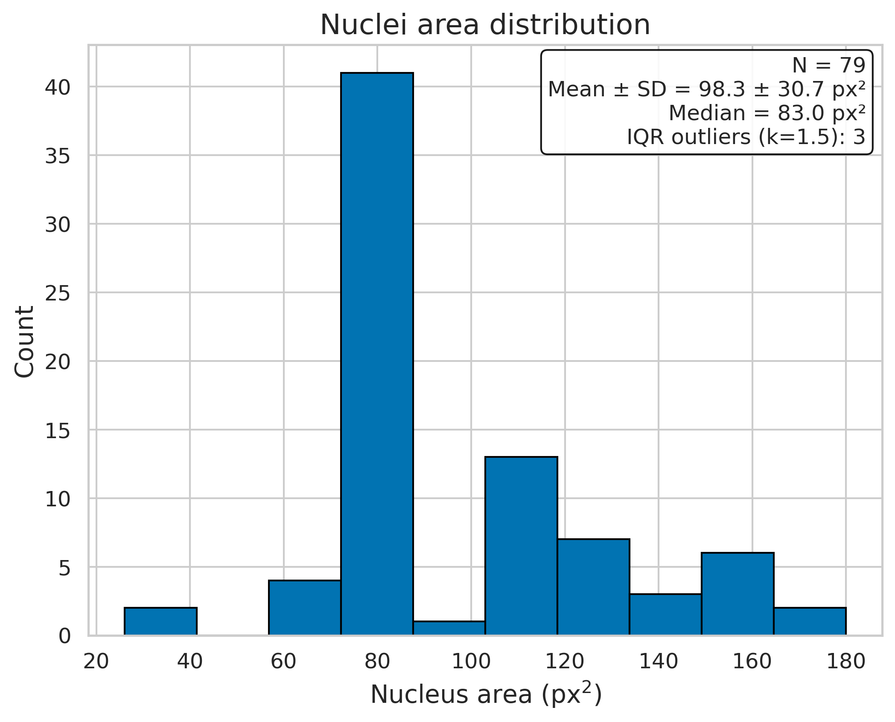
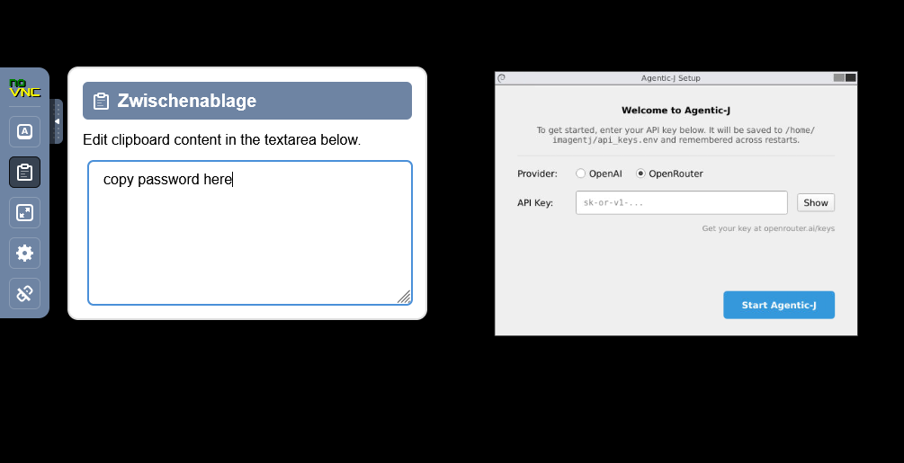

Bioimage analysis,
written, run, and debugged
by an AI agent.
Agentic-J runs ImageJ inside a container next to a chat panel that plans your analysis, writes and executes Groovy macros, guides plugin interface usage, and produces publication-ready figures and reports, and much more — all from your browser.
Runs locally on your machine Image pixels never leave your computer Apache 2.0 · open source

Everything you need to go from raw images to results.
A multi-agent system that thinks like a microscopy image analysis experts: it plans, picks the right plugin, writes the script, runs it, and explains the result.
Multi-agent supervisor
A supervisor coordinates specialists for plugin selection, Groovy coding, debugging, statistics, plotting and QA. You only ever talk to the supervisor.
Production-ready Groovy
The Coder agent writes idiomatic Fiji macros referencing real plugin APIs. The Debugger reads the ImageJ log, traces the exception, and fixes the script.
Curated plugins and more
StarDist, TrackMate, MorphoLibJ, BigStitcher, BoneJ, Cellpose, Ilastik, SNT and 16 more (keep growing) — with skill packs the agent retrieves at runtime via RAG.
Vision-aware dialog help
Open any plugin dialog and ask "what does this window do?" — the agent screenshots it and explains every parameter in context with a vision model.
Browser-native, no install
Fiji runs in a virtual desktop served via noVNC at localhost:6080. No Java, no XQuartz, no plugin hunting — just docker compose up.
Reproducible projects
Every run gets a folder with raw images, scripts, results, figures, logs and a state ledger. Optional QA agent generates a checklist report.
UI clicks or Groovy scripts
You choose. Tell the agent "do this through the UI" and it walks Fiji menus for you, or ask for a script and it writes a re-runnable Groovy macro. Both are first-class.
Secure by design
Bound to localhost, non-root container, all Linux capabilities dropped, no-new-privileges. The agent only sees ./data/ — your image pixels never leave your machine; only metadata and chat are sent to the LLM.
Supervisor + Specialists = An expert team for you
Agentic-J doesn't pretend one model can do everything. The supervisor plans and delegates; specialists are sharp tools you can swap and tune independently.
A pipeline that mirrors how a human analyst works
From "segment my cells" to a documented project folder, the supervisor follows a structured pipeline you can interrupt or redirect at any step.
- Persistent
state_ledger.jsonshared between agents — every step is auditable. - RAG over a curated knowledge base of plugin docs & past scripting fixes.
- Scripts saved with version history so you can re-run them outside the agent.
- Optional QA agent produces a publication-standards checklist at the end.
Up and running in three commands.
Requires Docker Desktop, ~8 GB RAM, ~30 GB free disk, and an OpenAI or OpenRouter API key.
Clone the repo
Install Git + Git LFS (the RAG database is stored via LFS), then clone.
# one-time: enable LFS for your user
git lfs install
git clone https://github.com/MMV-Lab/Agentic-J.git Agentic-J
cd Agentic-J
Configure credentials
Copy the template and add your API key.
# pick OpenAI or OpenRouter cp .env.template .env # edit .env → OPENAI_API_KEY=sk-... OPEN_ROUTER_API_KEY=sk-...
Add your images
Drop image files into ./data/; the agent sees them at /app/data.
Agentic-J/ ├── data/ │ └── my_image.tif ├── .env └── docker-compose.yml
Launch
Open localhost:6080/vnc.html when the build finishes.
docker compose up # first run pulls / builds the image # subsequent runs reuse the cache
From a sentence to scripts to results
A typical session: describe the task in plain English, watch the agent planning, writing Groovy, executing it, and explaining what it does.

scripts/imagej/ with version history — re-runnable outside the agent.


24 plugins the agent already speaks fluently and there will be more
Each plugin ships with a curated skill pack — descriptions, common patterns, parameter notes — that the agent retrieves at runtime via RAG.
Need something else? Ask the agent to install it, or use Fiji's Help → Update… menu.
Five short guides to get fluent.
Each guide is a single page; together they take ~15 minutes to read.
Getting Started
Prerequisites, .env setup, API keys, starting the container.
Interface & Agents
The noVNC interface, agent architecture, supported plugins.
Read guide → 03Prompting
How to write effective prompts, with concrete before/after examples.
Read guide → 04Data & Reports
Where files live, chat history, usage reports, issue reporting.
Read guide → 05Security
Local-only by default, container hardening, key handling.
Read guide → 06Docker manual
Volumes, logs, troubleshooting, advanced configuration.
Read guide →Try it on your own data.
Drop a TIFF into ./data/, write your goal, and watch the agent take it to labelled masks, CSVs and plots. Bugs, suggestions, feature requests? Let us know!